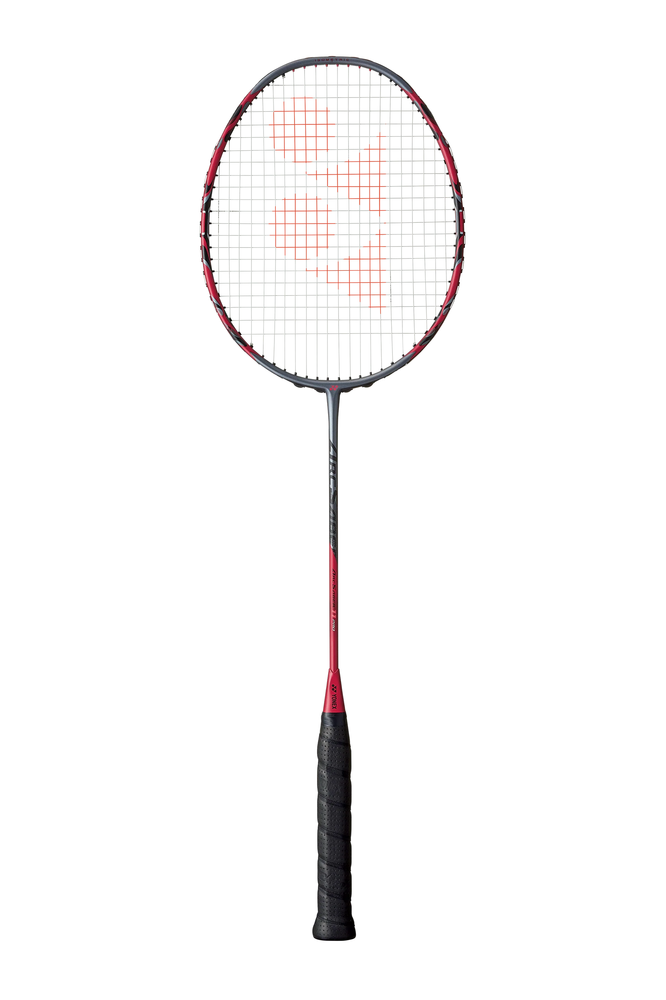

Til að spila badminton þarf ekki mjög mikinn búnað.
Helstu hlutirnir eru badmintonspaði, fjaðrabolti,
net og hentugir skór og íþróttaföt.

Badmintonspaði frá Yonex.
Badmintonspaði
Badmintonspaðinn er mikilvægasti hluti búnaðarins.
Spaðar eru yfirleitt mjög léttir svo leikmenn geti
hreyft þá hratt og brugðist við boltanum.
Spaðar eru framleiddir úr mismunandi efnum og geta
verið hannaðir fyrir mismunandi leikstíla. Sumir
spaðar leggja meiri áherslu á kraft en aðrir á
hraða og stjórn.
Fjaðrabolti
Fjaðraboltinn er sérstakur bolti sem notaður er í
badminton. Hann er oft gerður úr alvöru fjöðrum
eða gerviefnum.
Fjaðraboltar úr alvöru fjöðrum eru oft notaðir í
keppnum. Þeir hafa ákveðna flugeiginleika og hægja
tiltölulega hratt á sér eftir að þeir eru slegnir.
Badmintonstrengir
Strengirnir í spaðanum hafa mikil áhrif á hvernig
spaðinn líður þegar boltinn er sleginn. Þeir eru
mismunandi að þykkt og spennu.
Meiri strengjaspenna getur gefið leikmanni meiri
stjórn, en lægri spenna getur hjálpað til við að
skapa meiri kraft. Hvaða spenna hentar fer eftir
leikmanni og leikstíl.
Badmintonskór
Góðir skór eru mjög mikilvægir í badminton vegna
þess að leikmenn þurfa stöðugt að hreyfa sig og
breyta hratt um stefnu.
Badmintonskór eru hannaðir til að veita gott grip
á gólfinu og stuðning þegar leikmaður hreyfir sig
hratt um völlinn.
Íþróttaföt
Mikilvægt er að vera í þægilegum íþróttafötum
sem takmarka ekki hreyfingar. Badminton getur
verið mjög krefjandi og því er gott að velja
létt og loftgóð föt.
Algengt er að leikmenn séu í stuttbuxum eða
íþróttabuxum og léttum íþróttabol. Fatnaðurinn
þarf fyrst og fremst að leyfa leikmanninum að
hreyfa sig frjálslega.
Net og völlur
Badminton er spilað á rétthyrndum velli sem er
skiptur í tvo helminga með neti. Völlurinn hefur
mismunandi línur fyrir einliðaleik, tvíliðaleik
og uppgjöf.
Netið er í miðjum vellinum og leikmenn þurfa að
slá boltann yfir það án þess að boltinn snerti
netið á ólöglegan hátt.
Hvað þarf byrjandi?
Ef þú ert að byrja í badminton þarftu ekki að
kaupa dýrasta búnaðinn. Góður byrjendaspaði,
nokkrir fjaðraboltar, þægilegir íþróttaskór og
hentug íþróttaföt eru yfirleitt nóg til að byrja.